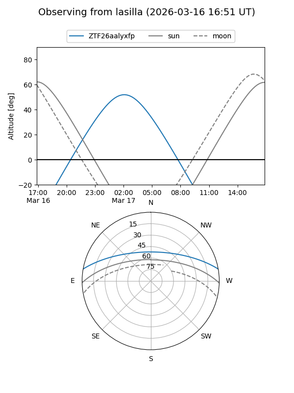
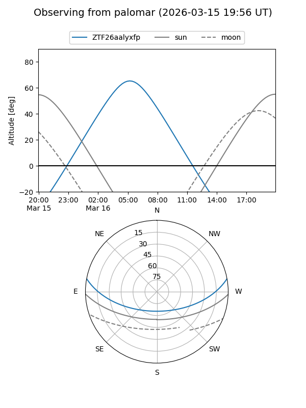

ZTF26aalyxfp
Target ZTF26aalyxfp at 2026-03-16 09:50
Aliases and brokers:
FINK: link
Lasair: link
ALeRCE: link
alt names
ZTF26aalyxfp (ztf,fink_ztf)
Coordinates:
equatorial (ra, dec) = 134.6746,+8.85621
equatorial (HMS+DMS) = 08:58:41.89,+08:51:22.36
galactic (l, b) = (219.7576,+32.26194)
Flags:
Photometry:
last ztfg=17.06
1 ztfg detections
Lightcurve
Visibility


Additional plots